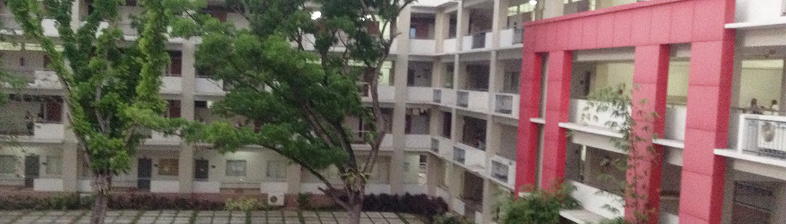

Administration
a
School Administrators for SY 2016-2017
Office of the President
Br. Ellakim P. Sosmeña, S.C.
President
Kirt Anthony R. Diaz, Ph.D.
Director of Institutional Affairs Office
Maribel C. Guerra
Director of CJC-Bro Polycarp Institute for Community Development Foundation
Miguelito R. Espinosa
Director of Sacred Heart Formation and Mission
Engr. Nelson D. Tandug
External and Alumni Affairs Officer
Atty. Jose Carlo C. Pancho
Legal Counsel
Office of the Vice President for Finance and Administration
Alex D. Niez, Ph.D., Ed.D.
VP Academics
Rogelio P. Bayod, Ph.D.
Director of Student Services Center
Leticia A. Cansancio, D.M.
Director of the Learning and Information Resource Center
Concordia P. Gumera, M.A.
School Registrar
Randy A. Tudy, Ph.D.
Director of Research and Publication Office /Center for Social Development Research
Kirt Anthony R. Diaz, Ph.D.
BED Principal
Alex D. Niez, Ph.D., Ed.D.
Dean of Graduate School and MAED Coordinator
Atty. Genevieve Marie Dolores Brandares-Paulino
Dean of Law School
Edgel Earl A. Abear, C.P.A., M.B.A.
Dean of College of Business and Accountancy/ Accountancy Program Head
Engr. Jonas M. Placer, M.Eng’g.
Dean of College of Engineering and Technology/CORETECH Administrator
Antonina H. Rebato, R.N., M.A.N.
Dean of College of Health Sciences/ Nursing Program Head
Maria Elena C. Morales, Ed.D.
Dean of Teachers Education, Arts and Sciences/Pre-School Education Program Head
Hermogenes C. Orion, Ed.D.
Dean of College for Special Programs
Engr. Wayne D. Manabat
Vocational Technology Institute Administrator/ Assessment Center Manager